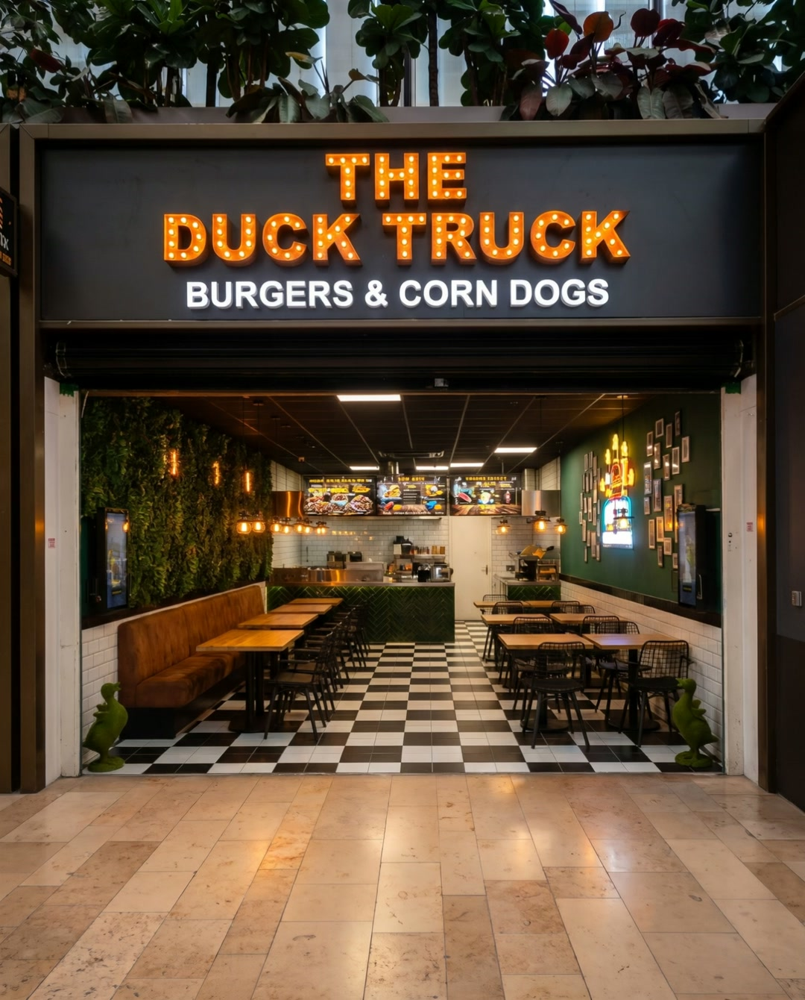

01
Vers en lekker
Gasten schrijven op Google dat het eten vers en lekker is.
★ 4,6 uit 300 Google-reviews · Zuidplein hoog 751, Rotterdam

De zaak op ZuidpleinWinkelcentrum Zuidplein · Rotterdam
Gekonfijte eend, kip, MRIJ rund of veggie op geroosterd brioche, en negen soorten corn dogs. Laat het bezorgen via Thuisbezorgd of eet aan tafel op Zuidplein.
4,6 uit 300 reviews op Google100% halal
Kies je vestiging. Bestellen en route gaan dan daarheen.
Zuidplein hoog 751, 3083 BJ Rotterdam
4,6 uit 300 reviews op Google
Elke burger komt op geroosterd brioche. Kies je vlees en een van de vijf smaken, en zie meteen wat erop zit en wat het kost.

Op Thuisbezorgd vind je hem onder Duck burgers.
Prijzen van Zuidplein. Bij deze vestiging kunnen ze afwijken: je ziet ze op Thuisbezorgd.

Corn dogs staan bij Zuidplein en de Binnenweg op de kaart. Deze knop gaat naar Zuidplein.
Prijzen zoals op onze bestelpagina van Zuidplein (november 2026). Tik op een categorie.
Je hebt een andere vestiging gekozen: daar kunnen de prijzen afwijken. Check ze op Thuisbezorgd.
Gasten schrijven op Google dat het eten vers en lekker is.
Gasten noemen het personeel en de eigenaar vriendelijk.
Alles is 100% halal. Gasten noemen het ook in hun reviews.
Volgens Thore de beste corn dogs ooit gegeten.
Raadt de spicy green fries van harte aan.
Alles vers, en goede service.
Samengevat uit reviews op Google, niet letterlijk geciteerd.
Een burger, een corn dog of iets uit de snackbak. Met de bestelzuil heb je je burger in drie tikken.
Bestellen en bezorgen gaat via Thuisbezorgd.
Zuidplein hoog 751, in Winkelcentrum Zuidplein. Aan tafel op de zwart-witte tegels.
The Duck Truck bestaat sinds 2017, "the best burger on wheels". Op Zuidplein staat de truck stil: een vaste zaak met een groene wand, het neonlogo en zitplekken.

Bekijk de actuele tijden op Google Maps.
Via Thuisbezorgd
Andere vestigingen van het merk. Bestellen gaat per vestiging via Thuisbezorgd.
Ja. Bestellen en bezorgen gaat via Thuisbezorgd.
Ja, alles is 100% halal.
Ja: de Duck burger vegetarisch (met vegetarische gebraden eend) en de Veggie Duck burgers in vijf smaken.
Een burger, friet en een drankje naar keuze. Het Duckburger menu kost € 17,90; het Beef, Chicken en Veggie Duck burger menu € 16,90.
Bekijk de actuele openingstijden op Google Maps.
Zuidplein hoog 751, 3083 BJ Rotterdam, in Winkelcentrum Zuidplein. Plan je route.
Bezorgd via Thuisbezorgd, of aan tafel op Zuidplein.